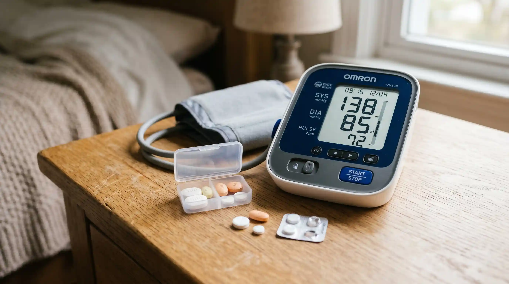

🏥 康健雜誌 × 邱文祥教授 聯合推出
台灣男性微循環活力
自我檢測
自我檢測
50歲以上男性專屬・3分鐘・免費・即時結果

邱文祥 教授
新光醫院泌尿科教授級主治醫師
國際泌尿科學會（SIU）榮譽會員
達文西手術台灣先驅・從事臨床逾30年
國際泌尿科學會（SIU）榮譽會員
達文西手術台灣先驅・從事臨床逾30年
58,000+
台灣男性已完成
3分鐘
即時獲得結果
100%
免費・匿名
「在我的門診裡，每天都有50歲以上的男性帶著說不出口的沮喪走進來。他們不知道自己的問題出在哪裡，更不知道有沒有辦法改善。」
這份檢測由邱文祥教授根據30年臨床經驗設計，幫助您在3分鐘內了解自己的微循環活力狀況，並獲得個人化的改善建議。
📋 本次檢測將評估：
- 您的晨勃頻率與微循環健康狀況
- 關鍵時刻的持久力與血流供應能力
- 腰膝酸軟、疲勞等微循環警訊
- 三高對微循環的影響程度
- 您目前的改善方式是否正確有效
🔒 本檢測完全匿名，不會收集任何個人資料
🌅 晨間活力指標
最近三個月，你的晨勃頻率如何？
晨勃是微循環健康最直接的指標，邱文祥教授稱之為「男性身體的每日自我檢測」。
✓ 已記錄，正在進入下一題...
❤️ 夫妻關係指標
關鍵時刻，你能維持多久？
持久力直接反映微血管的供血能力。邱文祥教授指出，這是判斷微循環堵塞程度最準確的指標之一。
✓ 已記錄，正在進入下一題...
⚠️ 微循環警訊指標
你有以下哪些身體症狀？
這些症狀是微循環堵塞在全身的外在表現，不只影響男性功能，更影響整體健康。
✓ 已記錄，正在進入下一題...

🩺 健康背景指標
你是否有三高或正在服用藥物？
三高（高血壓、高血脂、高血糖）會直接加速微循環堵塞，是50歲以上男性最需要關注的風險因子。
✓ 已記錄，正在進入下一題...
🔍 改善歷程指標
你嘗試過哪些改善方法？
了解您過去的嘗試，有助於我們給出更精準的建議。
✓ 已記錄，正在分析您的結果...
正在分析您的微循環狀況...
邱文祥教授的AI評估系統正在根據您的5項回答，計算您的微循環活力指數
0%
1
分析晨勃頻率數據...2
評估持久力指標...3
比對身體症狀資料庫...4
計算三高風險係數...5
生成個人化改善建議...⚠️ 檢測結果：需要關注
您的微循環活力指數
偏低，建議盡快改善
偏低，建議盡快改善
根據您的5項回答，邱文祥教授AI評估系統分析如下
38
/ 100分
中度微循環堵塞
您的微循環系統已出現明顯堵塞，若不盡快改善，功能退化速度將持續加快。
📊 您的個人化分析報告
晨勃頻率異常您的晨勃頻率顯示微循環在夜間修復功能不足，這是最早期也最重要的警訊。
持久力下降微血管供血不足導致關鍵時刻無法維持，這不是意志力問題，是生理機制問題。
建議方向：純漢方微循環修復根據您的狀況，邱文祥教授建議選擇從根源疏通微循環的純漢方配方，避免化學藥物的副作用風險。

💊 邱文祥教授針對您的狀況推薦：
根據您的檢測結果，您目前最需要的是一個能從根源疏通微循環、同時對三高人群安全的純漢方配方。在邱文祥教授30年的臨床觀察中，霸王養精蓄力丹是目前台灣市場上最符合這個條件的產品——黑瑪卡、鹿茸、淫羊藿三大核心成分協同作用，不依賴外力強制，3天即可感受到明顯改善。
免運費
貨到付款
30天退款
隱私包裝
🎉 讀者專屬優惠・限時半價
填寫以下資料，客服將優先為您確認訂單

霸王養精蓄力丹・1瓶
NT$ 2,778
NT$ 1,398
限時半價
⏰ 讀者專屬優惠倒數計時
23小時
:
59分鐘
:
59秒
📦 本批次庫存
已售出 78%，僅剩 22 組